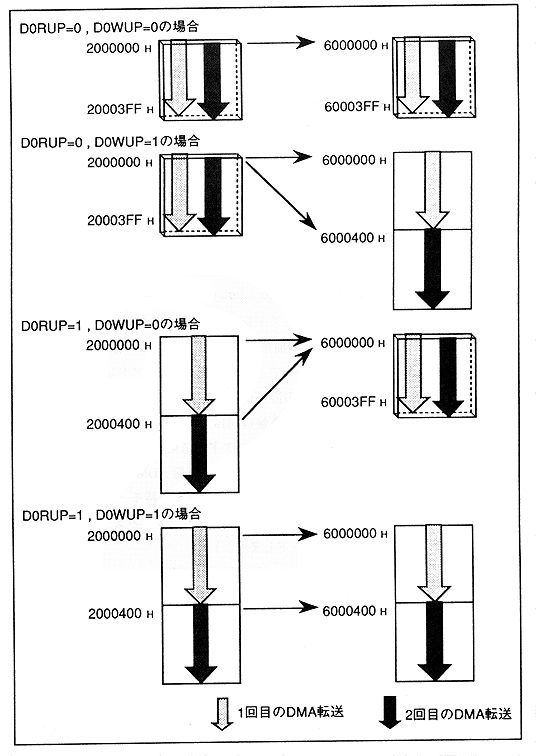

When the read address update bit is 0, the same address is referenced (read) for the first time and the second time. When the read address update bit is 1, the address referenced for the second time refers to the next address for the first time.
When the write address update bit is 0, write to the same address for the first and second time. When the write address update bit is 1, the second write is performed from the next address written the first time.